Tiradas con Ventaja/Desventaja
Modifica automáticamente tus tiradas de dados manteniendo presionadas
las teclas especiales mientras haces clic en un botón de tirada.
Shift
Tirada con Ventaja
Alt
Tirada con Desventaja
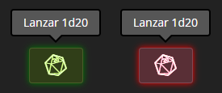
Mediciones Persistentes
Mantén tus mediciones en el mapa de forma persistente. Activa o
desactiva el modo de persistencia usando el botón de anclaje en el
panel de mediciones.
Botón
Alternar persistencia de mediciones
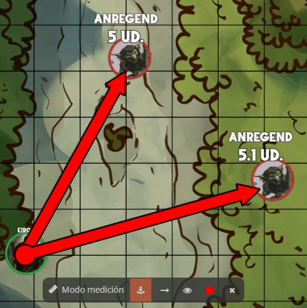
Compartir Contenido al Chat
Comparte rápidamente conjuros, items, reglas y otros contenidos con tu
DM y compañeros. Los elementos se resaltan en azul cuando están listos
para compartir.
Shift + Click
Comparte el elemento al chat
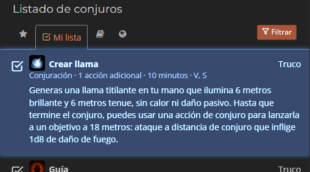
Enlaces en Mensajes del Chat
Los enlaces de reglas, objetos, conjuros y otros contenidos de Nivel20
se detectan automáticamente en el chat y se abren en ventanas
internas.
Auto
Los enlaces se convierten automáticamente al escribirlos
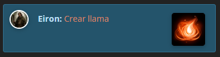
Susurrar en el Chat
Envía mensajes privados a otros jugadores escribiendo /w nombre. El
modo se cambia automáticamente a privado y solo el destinatario verá
el mensaje. Los susurros se destacan en verde en el chat.
Los usuarios sin la extensión no podrán recibir susurros.
/w nombre mensaje
Enviar susurro privado
Tab
Autocompletar nombre de usuario conectado
Ejemplos:
•
•
/w Lucius hola, ¿estás listo?•
/w "Ana María" ¿puedes revisar la pista?
Autocompletado con Tab:
• Escribe
• Escribe
• Presiona Tab varias veces para ciclar entre todas las coincidencias
• Las comillas se agregan automáticamente para nombres con espacios
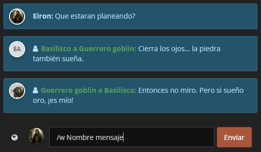
/w y presiona Tab para ciclar entre todos los
usuarios conectados• Escribe
/w Lu y presiona Tab para autocompletar
usuarios que comienzan con "Lu"• Presiona Tab varias veces para ciclar entre todas las coincidencias
• Las comillas se agregan automáticamente para nombres con espacios
Atajos para Tokens
Controla rápidamente los tokens/fichas del mapa usando atajos de
teclado. Selecciona un token primero.
Ctrl + H
Alternar visibilidad del token
Ctrl + B
Bloquear/desbloquear el token
Ctrl + E
Editar el token seleccionado
Ctrl + D
Duplicar el token seleccionado
Delete
Eliminar el token seleccionado
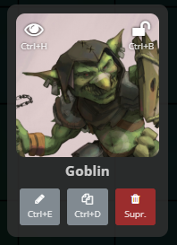
Altura de Tokens
Ajusta la altura de uno o varios tokens seleccionados para colocarlos
encima o debajo de otros en el orden deseado.
Pg Up
Subir altura del token (+1)
Pg Down
Bajar altura del token (-1)
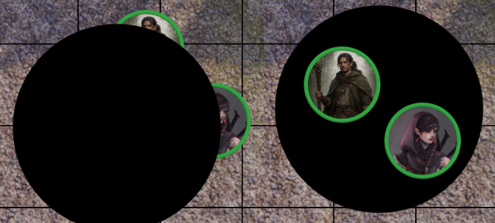
Mover Tokens con el Teclado
Mueve uno o varios tokens seleccionados con las flechas del teclado.
Flechas
Mover token una casilla
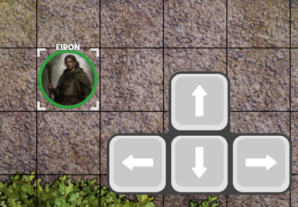
Distancia recorrida
Muestra automáticamente la distancia recorrida al arrastrar tokens por el mapa.
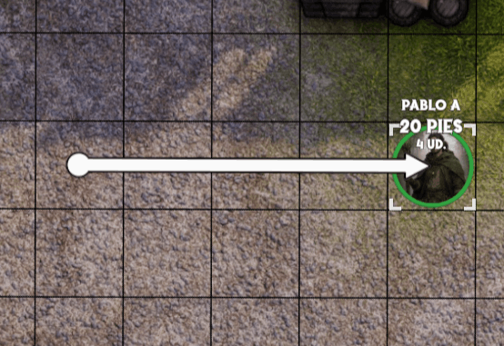
Velocidad de arrastre de tokens
Incrementa la velocidad de las animaciones al arrastrar tokens por el mapa. La velocidad es personalizable desde la configuración.
Evita que los tokens se desacomoden al arrastrar varios a la vez por largas distancias.
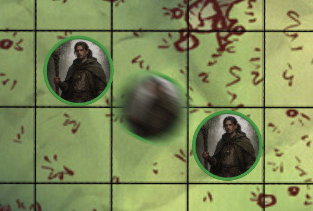
Efectos Ambientales
Agrega una capa de color sobre el tablero para simular horas del día,
clima o eventos astronómicos. Puedes ajustar color, intensidad y modo
de fusión para ambientar cada escena.
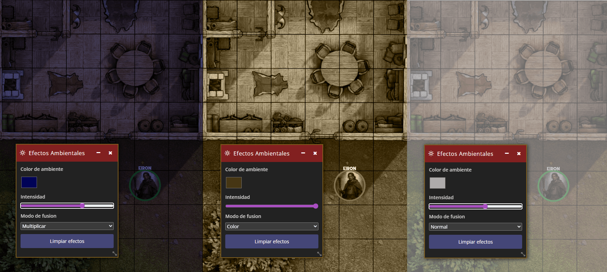
Panel de Notas
Abre un panel flotante para tomar notas durante la partida. Las notas
se guardan automáticamente en el navegador y persisten entre sesiones.
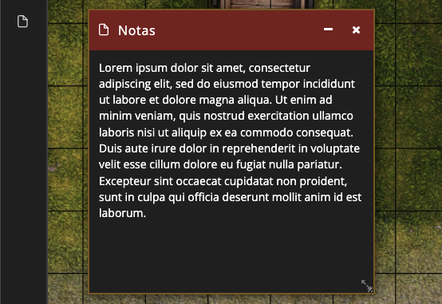
Panel de Configuración
Centraliza todas las configuraciones de Nivel21 en un panel de
ajustes.
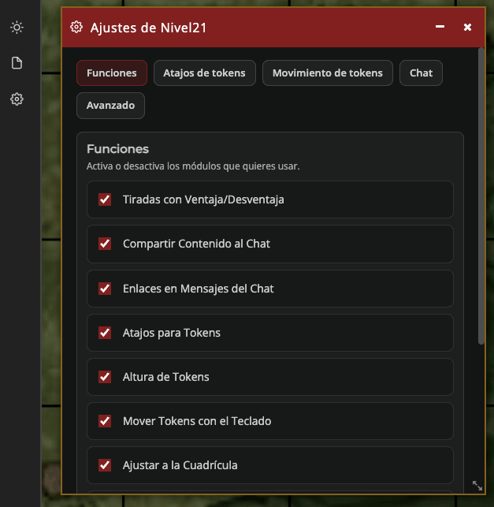
Informe de Errores
Muestra un informe de errores cuando alguna función no se carga
correctamente para que puedas copiarlo y compartirlo con
nosotros. Esto nos ayuda a identificar y solucionar problemas
de compatibilidad con futuras actualizaciones de Nivel20.
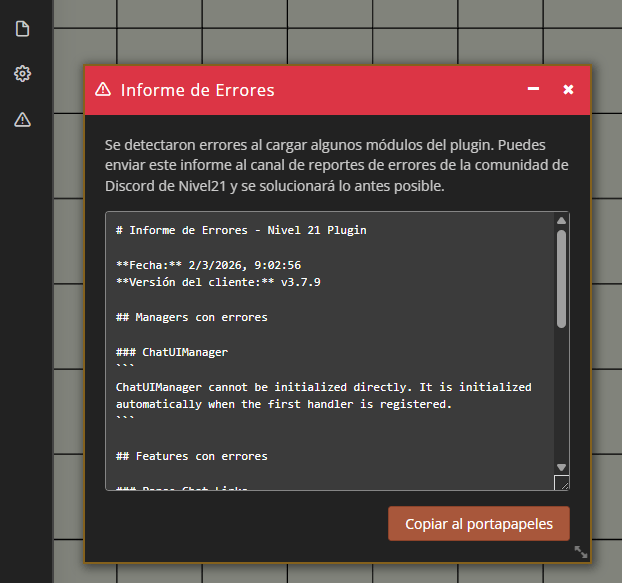
Carpetas anidadas
Nivel20 aún no soporta carpetas dentro de carpetas de forma nativa.
Organiza acciones en carpetas usando el separador " > " en el nombre.
La barra se convierte en carpetas anidadas automáticamente.
Ejemplo:
Crea un item llamado "Ataques > Espadas > Estocada"
Si quieres elegir un icono en la carpeta "Espadas", crea una accion
"Carpeta" o "Sin acción" con nombre "Espadas", y seleccionar el icono
deseado.
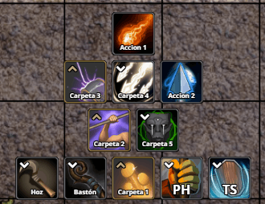
Enviar tokens al chat
Permite agregar notas descriptivas a los tokens que se pueden compartir
con los jugadores. Los DMs pueden hacer clic derecho en un token para
ver o enviar sus notas al chat.
Click derecho en token (DM)
Ver/enviar notas del token
Notas visibles
Se muestran con formato enriquecido en el chat
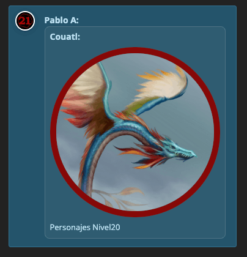
Asignar tokens a jugadores
Permite que los DMs asignen tokens a jugadores específicos. Los jugadores asignados podrán ver y controlar estos tokens aunque estén ocultos o bloqueados para los demás.
Click derecho en token (DM): Menú "Asignar a" para seleccionar jugadores o eliminar asignación.

Utilidades de cámara
Herramientas para los DMs que permiten controlar la cámara del mapa
mediante el menú contextual.
Centrar cámara a todos: Centra la cámara de todos los jugadores en el punto del mapa donde se hizo clic, ideal para revelar nuevas áreas o enfocar la acción.
Enderezar cámara: Restablece la rotación de la cámara a 0 grados, proporcionando una vista ortogonal perfecta del mapa.
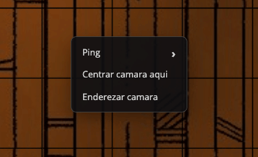
Ping en el Mapa
Sistema de marcadores visuales animados para señalar ubicaciones en el
mapa. Soporta múltiples presets con iconos animados y colores
personalizados.
Click derecho en mapa
Menú de ping
/ping x z [color] [icon]
Comando manual
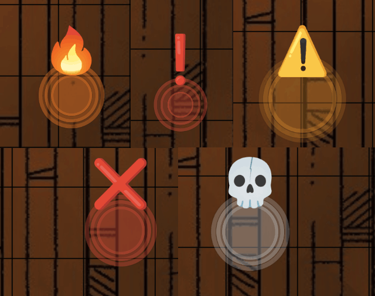